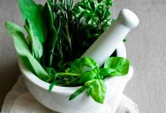

SANTO REMEDIO
SANTO REMEDIOLas plantas medicinales son plantas que contienen compuestos químicos que pueden ser usados para tratar o prevenir enfermedades. Las rectas de plantas medicinales son recetas que describen cómo preparar y utilizar estas plantas para obtener sus beneficios terapéuticos.
¿Para qué sirven las plantas medicinales?

Las plantas medicinales se pueden usar para:
- Aliviar síntomas: Ayudan a reducir el dolor, la fiebre, la tos, entre otros.
- Prevenir enfermedades: Algunas plantas tienen propiedades que pueden fortalecer el sistema inmunológico y ayudar a prevenir infecciones.
- Curar enfermedades: Algunas plantas medicinales han demostrado ser eficaces para tratar condiciones específicas, como la diabetes, la gastritis, entre otras.
¿Qué son las rectas de plantas medicinales?
Las rectas de plantas medicinales son instrucciones detalladas sobre cómo preparar y utilizar las plantas medicinales para obtener sus beneficios terapéuticos. Estas recetas pueden incluir información sobre:
- Qué partes de la planta se deben utilizar: Por ejemplo, hojas, raíces, flores o semillas.
- Cómo preparar la planta: Por ejemplo, en infusión, cocción, cataplasma, entre otros.
- Cómo utilizar la preparación: Por ejemplo, beber el té, aplicar un cataplasma, entre otros.
- Cantidad de planta y agua a utilizar: .
- Tiempo de preparación: .
Ejemplos de recetas de plantas medicinales:
- Infusión de manzanilla: Se utiliza para calmar dolores de cabeza, aliviar la inflamación, y mejorar el sueño.
- Cocimiento de hojas de guayaba: Ayuda a tratar la diarrea y otros problemas digestivos.
- Tónico de muicle: Se utiliza para regular la glucosa en sangre y aliviar síntomas de diabetes.
-
Beneficios de las plantas medicinales:
- Efectos secundarios mínimos: En general, las plantas medicinales son menos propensas a causar efectos secundarios que los medicamentos sintéticos.
- Alternativa natural: Pueden ser una alternativa natural para tratar diversas dolencias.
- Tradición ancestral: Su uso se remonta a tiempos ancestrales y forma parte de la cultura de diversas comunidades.
Advertencia:
Es importante consultar con un profesional de la salud antes de utilizar plantas medicinales, especialmente si se está tomando otros medicamentos o si se tiene alguna condición médica. - Efectos secundarios mínimos: En general, las plantas medicinales son menos propensas a causar efectos secundarios que los medicamentos sintéticos.